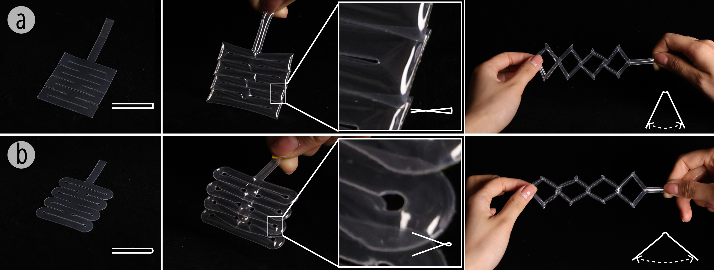
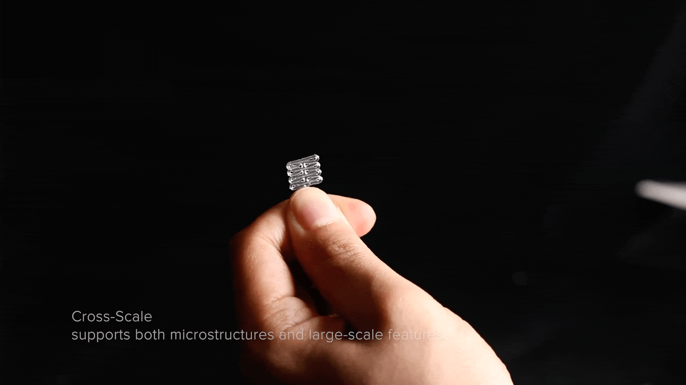
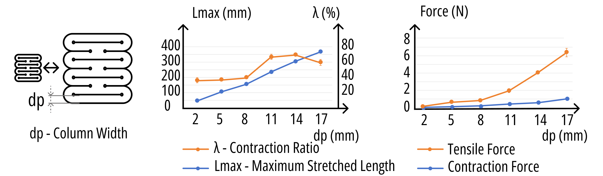
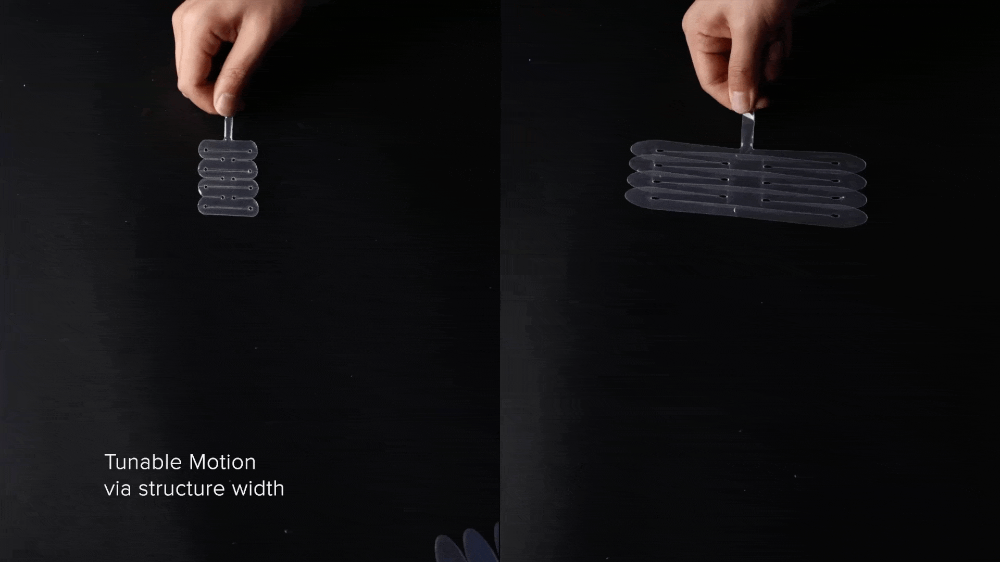
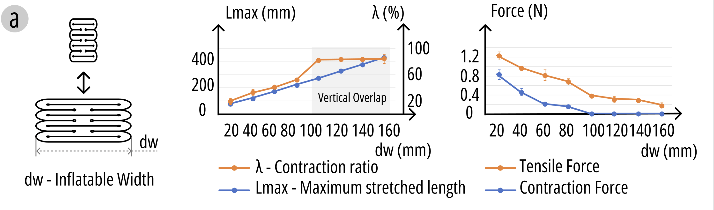
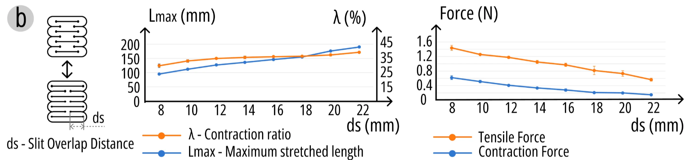
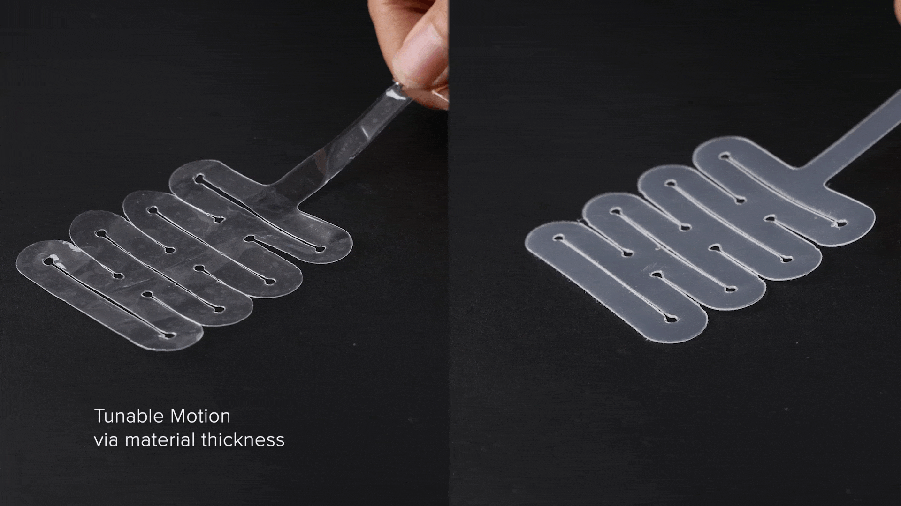
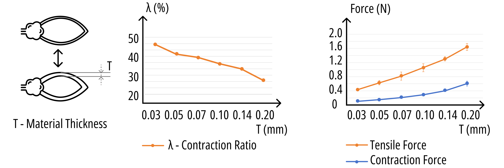

This page organizes the current design-space exploration into morphology, process, precision, and deformation. It summarizes what kinds of shapes can be made, how the fabrication workflows differ, where the current limits are, and how the material behaves after swelling, drying, and compression.

This subsection records the geometric-form library tests in more detail. The current focus is on original sloped-surface samples and related material trials, using a 30 mm baseline specimen to compare how angle, spacing, and process settings influence the resulting geometry.
The following sample groups were documented for the original slope study: `16W 8000 24`, `16W 8000 24`, `16W 8000 22`, `16W 8000 19`, `16W 8000 19`, `16W 8000 20`, `16W 8000 2x7`, `16W 8000 2x9`, `16W 8000 22`, and `16W 8000 16`.







Because some angles became too small, the angle test effectively shifted into the gap between the third and fourth sample groups. A second baseline using a 20 mm sample was introduced to continue the comparison.
Some of the 20 mm setup records are still only available in Feishu and cannot currently be shown outside that platform.
The later geometry tests also explored directional control of bending deformation in both wet and dry conditions.
Material trials were carried out alongside the geometric samples to compare how different material conditions affect the shape result, stability, and deformation behavior.
This branch tests achievable ranges for slope and curvature. A main focus is the angle range, especially larger inclinations from 0 to 90 degrees. Polygon-count variation is currently paused and will not be expanded for now.
The baseline workflow is single-side front engraving. A second branch studies double-sided engraving as a way to extend the process toward more volumetric and directional forms.
Vertical-face processing and six-face processing explore more enclosed volumetric fabrication. One target case is a geometry with a recessed facade. This direction appears feasible and is still in progress.
Failure records show that long-duration processing can be unstable. One vertical-face test on a 20 W machine at 8000 / 60 burned after about 30 minutes, with four passes producing one hole. Successful six-face tests used top-face settings around 8000 / 80 and vertical-face settings around 3500 / 30, with one-pass, two-pass, or four-pass variants depending on the sample.
Some model files and path files are currently missing, and some intermediate records are still only available in Feishu.
Two additional process directions are being archived here: planar modular assemblies for larger composed forms, and mortise-and-tenon style assembly for top-bottom joining through interlocking concave and convex features.
The minimum-height experiment studies how small a reliable stepped height difference can be. A linear height-gradient structure is generated in Rhino / Grasshopper, fabricated, soaked, and allowed to expand fully. The actual step differences are then measured visually, tactually, and with a caliper.
Current results indicate that below about 1.5 mm, neighboring regions begin to couple during swelling and the height boundary becomes difficult to reproduce consistently. At 1.5 mm and above, the stepped geometry becomes clearer and more stable. For now, 1.5 mm is treated as the minimum reliable layer height.
Single-direction paths leave obvious grooves, and after swelling those grooves can become amplified into ridged or banded surfaces. To reduce this anisotropy, later tests used cross-direction paths, alternating between x and y. This distributes energy more evenly and makes the final surface smoother and more stable. Multi-intensity control remains an open branch for further testing.
This branch studies minimum hollow-wall thickness and minimum readable engraved text. Current text tests suggest that a 1.0 cm diameter display is recommended, 0.75 cm remains barely legible, and anything smaller is not practical. One letter-U sample sequence used heights of 1.5 cm, 1.0 cm, 0.75 cm, 0.5 cm, 0.4 cm, 0.3 cm, and 0.25 cm.
These tests also connect to the broader question of minimum achievable features and maximum achievable object size before modular assembly or self-assembly workflows become necessary.
This section studies vertical expansion after wet activation, changes during drying, repeated compression and re-expansion, and whether performance decays after many cycles.
In the current compression-recovery workflow, samples are pressed at 120 degrees for 25 seconds. Samples thicker than about 10 mm are hard to hold in the compressed state, so 25 seconds is used as the standard pressing duration. For a stable dry state, samples are dried in a ventilated oven at 120 degrees for 45 minutes before testing.
Several observations are already clear. Thicker samples can show lateral offset while still recovering locally. If the user can tolerate this lateral distortion, folding can allow samples to be compressed beyond their nominal range. At 150 degrees, surface yellowing appears more easily and may interfere with recovery, although soaking reduces the severity of that effect.
Future branches may include more tests on large objects, highly detailed objects, text, thin walls, twisting-based compression strategies, and appearance changes after 5, 10, or many more compression cycles.
The current sample archive includes bear, small-car, and test-coupon cases, along with a delayed-drying branch and a possible future direction based on front-back density differences for metamaterial-like deformation. A related reference is MIT Media Lab's Kinetix project.
Reference: MIT Media Lab Kinetix